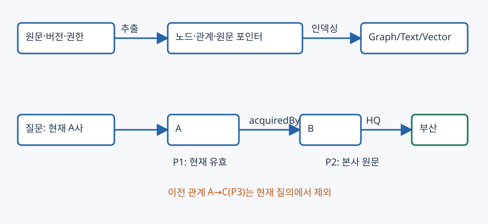

13. GraphRAG — 관계를 찾아 근거 경로로 답하기
이 장은 Graph_RAG.pdf 1~35쪽을 기준으로 그래프 표현·구축·검색·생성을 연결한다. 기존 05장의 ANN 그래프는 벡터를 빠르게 찾는 탐색 경로이고, 여기의 지식 그래프는 회사·도시 등의 관계를 나타내는 데이터다. 둘을 동시에 사용할 수 있지만 간선의 의미가 다르다. 예제 기업·관계·점수는 교육용이며 실제 그래프 DB·LLM을 실행하지 않는다.
1. 무엇이 입력되고 무엇이 나오는가
질문이 “A사를 인수한 회사의 본사는 어디인가?”라면 A → 인수자 B → 본사 부산이라는 두 관계가 필요하다. A와 부산이 같은 문서에서 자주 등장했다는 유사도만으로 두 관계가 입증되지는 않는다. 그래프는 관계의 방향·종류를 명시하고 각 관계를 원문에 연결한다.
| 구성 | 입력 | 출력 |
|---|---|---|
| 그래프 인덱싱 | 문서·표·기존 KG와 버전·권한 | 노드·관계·속성·원문 포인터 및 검색 인덱스 |
| 질의 해석·entity linking | 원래 질문·시점·동명이인 후보 | 시작 entity ID와 필요한 관계·제약 |
| G-Retrieval | 질문 q와 그래프 G | 노드·triplet·path·subgraph G* |
| G-Generation | 질문과 G*의 구조·텍스트·출처 | 근거가 연결된 답 또는 보류 |
원본 3~4쪽의 Text-Attributed Graph(TAG)는 $G=(V,E,A,\{x_v\},\{e_{ij}\})$로 나타낼 수 있다. V는 노드, E는 연결, A는 인접 행렬, x는 노드의 텍스트 속성, e는 간선의 텍스트 속성이다. KG에서는 entity가 노드, 관계가 간선이 된다. 사람·회사·도시라는 타입과 실제 Alice·회사B·부산이라는 개체를 구별한다.
(A, acquiredBy, B) [원문 P1, 유효 2025~, 공식]
(B, headquarters, 부산) [P2, 유효 2025~, 공식]
(A, acquiredBy, C) [P3, 유효 ~2024, 이전 판본]
(C, headquarters, 서울) [P4, 유효 2024~, 공식]
현재 질문에 P3을 섞으면 서울이라는 다른 답이 생긴다. 추출된 그래프가 있다고 최신성·사실성·권한이 자동 보장되지는 않는다.

그림 읽기: 위쪽은 문서 등록 시 실행하는 구축, 아래쪽은 질문 시 검색이다. A→B와 B→부산의 두 관계가 모두 있을 때만 답 경로가 완성된다. 회색 이전 관계는 현재 질문의 근거에서 제외한다. 화살표는 관계 방향이며 화면상의 거리는 벡터 유사도가 아니다.
2. 그래프는 어디에서 오는가
원본 9~15쪽은 공개 KG와 자체 구축 그래프를 구분한다. Wikidata·DBpedia 같은 백과사전 KG, ConceptNet 같은 상식 KG, 분야별 KG를 가져올 수 있다. 자체 자료에서는 문서의 인용·동일 주제, passage의 공유 키워드, NER/LLM으로 추출한 entity 관계로 그래프를 만든다. 공유 키워드 간선과 실제 인수 관계를 같은 관계로 취급하면 안 된다.
- 문서·표를 파싱하고 원문 ID·절·버전·유효기간·접근 조건을 저장한다.
- entity 후보와 관계를 추출한다. “인수 검토 중”을 완료된 인수로 바꾸지 않는다.
- entity resolution으로 별칭을 묶되 동명이인·동명 기업을 섞지 않는다.
- 관계의 방향·타입·단위·시간·원문 span을 검증한다. 부정·추정·취소도 보존한다.
- 그래프 인접 구조와 텍스트/벡터 검색 표현을 함께 저장한다.
- 수정·삭제 시 관계와 연결된 청크·요약·임베딩을 함께 갱신한다.
| 인덱스 | 저장·검색하는 것 | 강점과 비용 |
|---|---|---|
| Graph | 노드 ID와 연결된 간선·속성 | 관계 순회가 직접적, 그래프 구축·갱신 필요 |
| Text | triplet·경로의 문장 표현 | 키워드 검색 가능, 구조·방향을 잃지 않게 직렬화 |
| Vector | 노드/관계/텍스트의 임베딩 | 의미 후보 확보, 가까운 벡터가 사실 증명을 대신하지 않음 |
| Hybrid | 구조·텍스트·벡터의 조합 | 후보 확보와 관계 검증을 나눔, 중복·동기화 관리 |
인덱싱의 세밀함이 반환 가능한 단위를 정한다. 문서 단위 벡터만 저장해 놓고 정확한 개체 관계를 자동 복원한다고 가정하지 않는다.
3. 검색기·반복 방식·반환 단위는 다른 선택이다
원본 16~35쪽의 세 축을 함께 읽는다.
| 축 | 선택 | 결정하는 것 |
|---|---|---|
| 검색기 | 규칙/비모수, LM 기반, GNN 기반 | 관련 노드·간선을 어떻게 점수화·선택하는가 |
| 실행 방식 | once, iterative, multi-stage | 검색 결과에 따라 다음 검색을 반복하는가 |
| 반환 단위 | node, triplet, path, subgraph, hybrid | 생성기에 어떤 크기의 구조를 전달하는가 |
규칙 검색은 entity linking 후 정한 k-hop·관계 타입·경로 패턴을 따라간다. PCST(Prize-Collecting Steiner Tree) 관점은 관련 노드의 보상과 연결 간선의 비용을 함께 고려해 연결된 부분그래프를 고른다. 단순 Top-K 노드 선택은 중요한 노드 사이의 연결 간선을 놓칠 수 있다. 작은 예의 목적함수를 선택 노드 보상 합 − 간선 비용 합으로 지정했다면 보상 4+3, 연결 비용2의 경로 점수는5다. 실제 논문·구현의 보상·제약·알고리즘까지 이 산술 예와 같다고 주장하지 않는다.
LM 기반 검색기는 질문과 관계를 읽어 다음 관계를 고르거나 미리 정의된 이웃 조회 함수를 호출한다. 원본의 Subgraph Retriever, KG-GPT, StructGPT는 이런 역할을 서로 다른 방식으로 구성한다. 질문에 적합하지 않은 관계를 고르거나 잘못된 중간 개체를 확정하면 다음 hop도 오염된다.
GNN 기반 검색기는 그래프의 연결 정보를 표현에 반영해 entity·경로를 점수화한다. 원본 5~6쪽의 메시지 전달은
이다. 이웃 메시지가 (2,0),(0,4)이고 AGG=mean이면 (1,2)다. UPD가 단순 합이고 현재 표현이 (1,1)이면 새 표현은 (2,3)이다. 이는 지정한 toy 함수의 계산이며 실제 GCN·GAT·GraphSAGE가 모두 같은 함수를 쓴다는 뜻이 아니다. 학습한 GNN 점수가 높아도 관계의 원문 진위 검사는 남는다.
Once는 한 번의 질의 처리 안에서 필요한 근거를 모은다. 독립적인 여러 경로를 병렬 조회할 수도 있다. Iterative는 앞선 결과의 개체·누락에 따라 다음 질의를 바꾼다. 고정 반복 횟수는 non-adaptive, 충분성·종료 신호에 따른 중지는 adaptive다. Multi-stage는 후보 검색→정밀 관계 선택처럼 서로 다른 검색기를 단계로 연결한다. 반복과 다단계는 함께 사용할 수 있다. “LM/GNN이 항상 더 정확하다”, “반복이 항상 낫다”는 보장은 없으며 같은 질문·비용에서 평가해야 한다.
4. 두 hop을 계산하고 실패 위치를 찾기
질문을 관계 패턴 acquiredBy → headquarters로 지정하고 현재 유효한 간선만 보자.
| 단계 | 현재 바인딩 | 필요한 다음 관계 | 새 바인딩·출처 |
|---|---|---|---|
| 시작 | company=A | acquiredBy | buyer=B, P1 |
| 1 hop 후 | buyer=B | headquarters | city=부산, P2 |
| 2 hop 후 | city=부산 | 없음 | A→B→부산, P1+P2 |
1 hop만 허용하면 인수자 B는 알아도 본사는 모른다. P1의 방향을 반대로 읽거나 P3을 현재 간선처럼 사용하면 다른 결과가 생긴다. 연결되어 있다는 이유만으로 donatedTo 같은 다른 관계를 acquiredBy로 해석하지 않는다. 반환 단위가 path라면 경로 전체의 관계 라벨·방향·출처를 전달하고, subgraph라면 질문과 무관한 가지가 컨텍스트를 차지하지 않도록 예산을 적용한다.
원본 7쪽은 $p(a\mid q,G)=\sum_{G'\subseteq G}p(a\mid q,G')p(G'\mid q,G)$라는 잠재 부분그래프 혼합 관점을 제시한다. 한 G*만 고르는 것은 근사이며, 선택한 부분그래프의 관련 점수를 답변의 사실 정확도 확률로 읽지 않는다. 생성 입력 변환 F는 triplet 표·직렬화 문장·그래프 인코더 표현 등의 형태가 가능하다. 원본 20쪽은 텍스트·그래프 표현을 결합하는 구체 구조의 예이지 모든 GraphRAG의 필수 구조가 아니다.
5. 지역 검색과 전역 검색
‘GraphRAG’는 그래프를 활용하는 넓은 방법의 이름이며 Microsoft GraphRAG라는 구체 시스템과 동일한 정의가 아니다. 다음 구분은 추가한 공식 사례다. **지역 검색(local)**은 특정 개체에 가까운 관계와 연결 원문을 모은다. **전역 검색(global)**은 커뮤니티 보고서들을 나누어 읽고 부분 응답을 통합해 데이터 전체의 주제를 다룬다. 공식 Local Search, 공식 Global Search
| 질문 | 필요한 범위 | 주의점 |
|---|---|---|
| “A사의 인수자와 본사는?” | A 관련 entity·관계·원문 | 국소 경로의 개체·시간·관계가 맞아야 함 |
| “전체 고객 문의에서 반복되는 주제는?” | 여러 커뮤니티 보고서·원문 연결 | 한 개체의 이웃만으로 전체를 대표하지 않음 |
교육용 보고서 C1에 사실 F1,F2, C2에 F2,F3,F4, C3에 F5,F6이 있다고 하자. 지역 C1은 두 사실, 전역에서 세 보고서를 모두 사용하면 중복 F2를 한 번만 세어 여섯 사실을 모은다. 보고서 길이가 80·100·60 단위이면 입력 합은240이다. 예산 때문에 C2가 빠지면 F3·F4를 놓친다. 이 숫자는 지정한 보고서의 집합·예산 계산이며 실제 LLM 요약·커뮤니티 탐지·정답률 측정이 아니다. 보고서 자체가 누락·오류를 담을 수 있으므로 원문으로 되돌아갈 수 있어야 한다.
6. 확인 질문과 해설
- A와 부산의 벡터 유사도가 높으면 A→B→부산의 관계가 증명되는가?
- k-hop을 늘리면 항상 답변이 좋아지는가?
- GNN을 쓰는가, 반복하는가, path를 반환하는가는 같은 선택인가?
- C1·C2·C3의 사실 수를 2+3+2=7로 보고하면 무엇이 잘못됐는가?
- 보고서의 전역 요약에 출처가 없으면 어떤 검증이 어려운가?
해설
- 아니다. 명시된 두 관계와 각 관계의 원문·시점·방향을 확인해야 한다.
- 아니다. 필요한 경로를 회수할 기회와 함께 무관한 가지·중복·비용·오류 전파도 늘 수 있다.
- 아니다. 각각 검색기, 실행 방식, 반환 단위라는 다른 축이다.
- 두 보고서에 반복된 F2를 두 번 센다. ID 기준 합집합은 여섯 사실이다.
- 추출 오류·요약 누락·판본 충돌을 관계·원문 단위로 추적하기 어렵다. 생성 보고서는 원문 증거 자체와 구분한다.
출처와 페이지 대응
- Graph_RAG.pdf: 2~6쪽 TAG·GNN, 7~11쪽 확률·검색·생성, 12~15쪽 자료·인덱스, 16~24쪽 검색기, 25~28쪽 반복 방식, 29~35쪽 반환 단위. 페이지는 PDF의 1-based 순서다.
- Graph RAG·Meta KDD Cup 실습 교안: 9~10쪽 구조 사례, 25~29쪽 웹/KG·MCP 연결. CRAG 평가·실습 흐름은 17장에서 이어진다.
- 05장의 ANN 그래프와 구별하고 09장의 multi-hop, 10장의 근거 관리, 14장의 질의 언어, 15장의 도구 실행과 함께 읽는다. 이 장의 자체 SVG와 계산 예제는 원본을 바꾸지 않고 새 폴더에 작성했다.